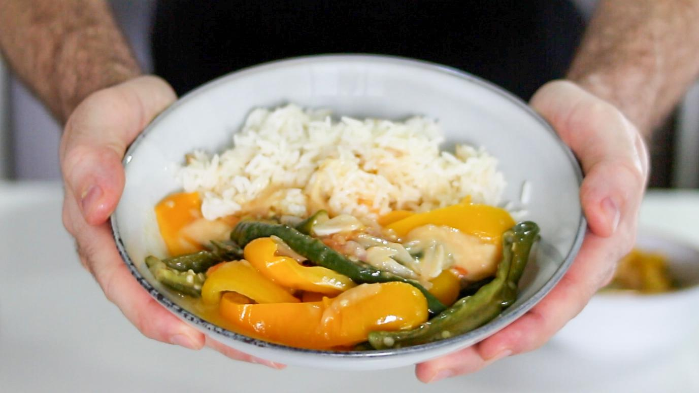

Gastronomia e Culinária do Butão
A culinária butanesa é conhecida por seus sabores intensos e uso generoso de pimentas. O prato mais famoso é o Ema Datshi, feito com queijo caseiro e pimentas, considerado o prato nacional.
Outros pratos populares incluem o Phaksha Paa (carne de porco com pimentas e vegetais), o Red Rice (arroz vermelho cultivado nas montanhas) e os Momos (pasteizinhos recheados cozidos no vapor).
As refeições costumam ser acompanhadas de chá de manteiga ou chá preto aromático. A gastronomia no Butão é mais do que comida: é uma forma de compartilhar momentos e tradições.
